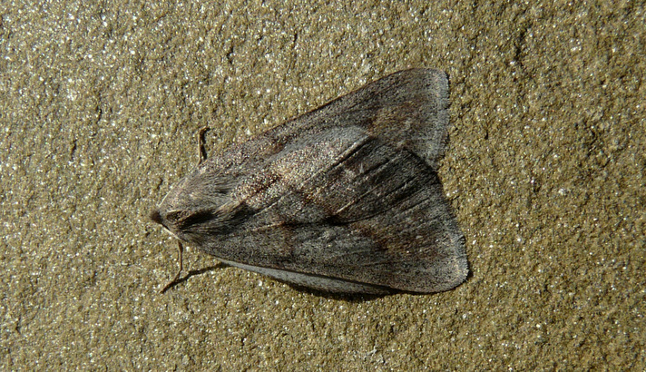
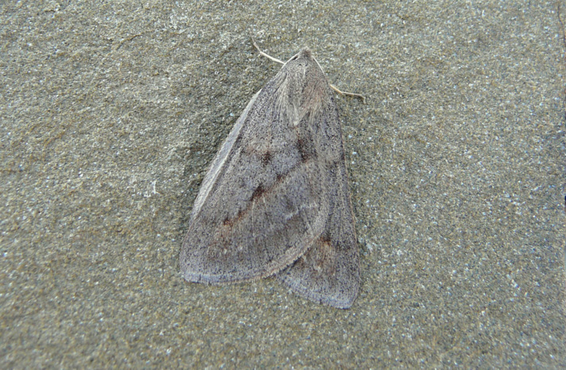
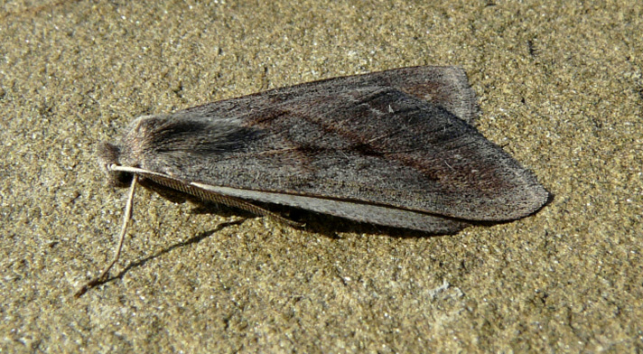
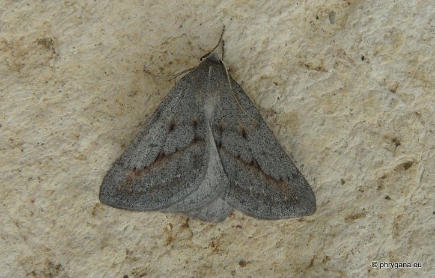

| PHRYGANA | Fauna | Flora | Galles | liste des espèces |
contact -
info - commentaires phrygana1 (at) gmail.com |
| Particularités crétoises | nouveautés | Mines | ressources naturelles |
| Chemerina caliginearia (Rambur 1833) |
| 171 | Fauna | GEOMETRIDAE | Ennominae | Chemerina Boisduval 1840 |
 Chemerina caliginearia Melambes (Agios Giorgos) 05 janvier 2010 |
| Envergure: 20 - 24 mm. Couleur de fond gris brunâtre à gris clair. Antennes brunes. Ailes en toit. Bande médiane beige plus ou moins marquée |
| Larve polyphage: diverses plantes herbacées dont Dorycnium rectum, Cistus sp., Thymus sp. |
| Espèce univoltine: période de vol: décembre janvier |
| Altitudes: 0 - 1000 m |
| Statut en Crète: indigène -- native |
| Biotopes en Crète: phrygana, olivaies, garrigue, collines sèches |
| Distribution: région Méditerranéenne |
| Note: l'adulte vient à la lumière. Espèce thermophile |
|
 Chemerina caliginearia Melambes (Agios Giorgos) 05 janvier 2010 |
|
 Chemerina caliginearia Melambes (Agios Giorgos) 05 janvier 2010 |
|
 Chemerina caliginearia Melambes (Agios Giorgos) 16 janvier 2011 |
| 30 septembre 2012 |
| © paul fontaine -- © Phrygana.eu 2007 -- 2013 |